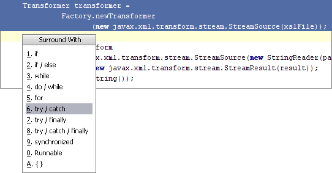

あるコード フラグメントでスローされた例外をキャッチするには、エディタでブロックを選択した後、 &shortcut:SurroundWith; ([コード] - [囲む...]) を押して try / catchを選択します。 ブロック内でスローされたすべての例外のキャッチ ブロックが自動的に生成されます。
[ファイル] - [設定] - [ファイル テンプレート]の [コード] タブで生成されたキャッチ ブロックのボディをカスタマイズできます。
他の式で囲むには、リストの他の項目を使用します。
